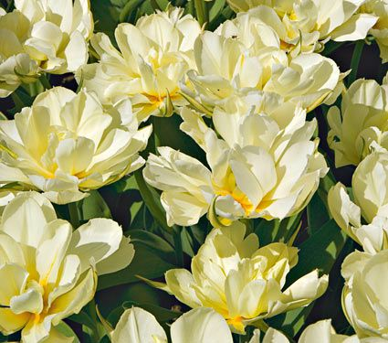

Special Deals
-
January
Greigii Tulips: These are reliably perennial Tulips with lovely purple-mottled or purple-striped foliage that is attractive before the flowers open and remains so even after they are gone. The chalice-shaped flowers generally open wide to reveal the interior colors. These exceptionally brilliant Tulips are much loved in Europe for creating vivid but compact displays. Early to midseason bloomers, these are perfect companions for midseason Daffodils, Anemones, and Hyacinths. Greigii Tulips are good for bedding and for forcing.
$20.99 -
February
"French" Single Late Tulips: We've separated these robust Tulips from the other single lates because they tend to grow taller. They are very strong perennials and have distinctively oblong-shaped flowers, which are long-stemmed and long-lasting. As you might imagine, they're great for cutting. Because the bulbs mature earlier, they also perform well in warmer climates.
$20.99 -
March
Single Late TulipsThese late-blooming Tulips are good for bedding and cutting. Try them under a flowering Crabapple.
$20.99 -
April
Darwin Hybrid Tulips:The Darwin Hybrids produce long-lasting flowers on strong stems that are perfect for cutting, and the brilliant colors of these very popular Tulips show up beautifully in the landscape. Darwin Hybrids usually perform well for several years, making them among the best perennial Tulips. They bloom in midseason, along with all but the earliest Daffodils, and they force well. Wind and weather resistant.
$20.99 -
May
Triumph Tulips The Triumphs make up the largest group of Tulips and the one that offers the widest range of colors. All have medium-length stems. Triumphs are best used for forcing and short-term bedding. They are also good in containers, if protected from freezing in areas colder than Zone 7.
$20.99 -
June
Double Tulips:Long-lasting, semidouble to double flowers that bear a striking resemblance to double Peonies. All Double Tulips are good for bedding, and some are excellent candidates for forcing. Early varieties bloom with Daffodils, Muscari, and Hyacinths. The shorter, earlier varieties are also great in pots, planters, and window boxes (if protected from freezing in Zones colder than 7).
$20.99 -
July
Fringed Tulips:Also know as "Crispa" Tulips. The flower petals are edged with very finely cut fringes. Fringed Tulips make unusual bedding plants. Midseason to late blooming.
$20.99 -
August
Fosteriana Tulips:The Fosterianas have exceptionally large, long flowers in rich colors that create vivid displays. This group is very popular for landscaping in Europe but not as familiar in the United States. It's worth the effort to get to know these Tulips because they are among the best for perennializing and naturalizing, as well as for forcing. They bloom early with Daffodils, whose warm yellows and oranges harmonize especially well with the hot-colored selections in this group. Try underplanting with blue Muscari or purple Pansies for maximum contrast.
$20.99  -
September
Greigii Tulips These are reliably perennial Tulips with lovely purple-mottled or purple-striped foliage that is attractive before the flowers open and remains so even after they are gone. The chalice-shaped flowers generally open wide to reveal the interior colors. These exceptionally brilliant Tulips are much loved in Europe for creating vivid but compact displays. Early to midseason bloomers, these are perfect companions for midseason Daffodils, Anemones, and Hyacinths. Greigii Tulips are good for bedding and for forcing.
$20.99 -
October
Viridiflora Tulips:These Tulips are often considered a novelty because they are unusual, but connoisseurs treasure their refined beauty. As the name suggests, their flowers are green, often in combination with a second, complementary color. Both varieties offered are long blooming and look simply spetacular in flower arrangements. Late blooming.
$20.99.jpg)
-
November
Single Early Tulips:These single-flowered cultivars are among the earliest Tulips to bloom, often with Daffodils. Because they open in cooler weather, the flowers usually last longer than those of later Tulips. They are perfect complements for Hyacinths, Violas, Forget-me-nots, and Pansies. Excellent for forcing, Single Early Tulips are also great for bedding and planting in containers (if pots are protected from freezing in Zones colder than 7).
$20.99.jpg)
-
December
Lily-Flowered Tulips:Very graceful and elegant flowers with pointed, reflexed petals, creating a distinctive profile. Lily-Flowered Tulips are late bloomers excellent for bedding and cutting.
$20.99.jpg)
Occasions
Company:
Shenly's Flower Shop
This website is made by Shenly Ann Sari
Copyright 2023
- Products
- About Us
- Contact